Topics
What is a Delivery Platform?
How do we build one?
This is a bit complicated
Let’s start by looking at how I stumbled into building one
Getting my toes wet
Company: Knowit Objectnet
Developers: 50+
Project: Public Sector Integration Bus
10 years ago I was a Java consultant at Knowit, one of my first jobs
50 devs in company, 10 or so on my team.
Working on integration bus for the municipality.
CI: Hudson, Monitoring: Nagios, early adopters Github Enterprise
CD: started slow, handholding, but then Puppet + some ruby
A great first experience as a developer
What enabled this?
First off; I had no idea that this was weird in 2011, public sector
Mostly geeks who loved their job
A few key people drove this specific process
They had support from management This just made sense to the company
Even the financial chief implemented a coding challenge in excel during a company trip.
Scal(a)ing up
Company: Finn.no
Developers: 150+
Project: Public and Private REST APIs
After working 3 years on Java, I wanted to learn more Scala
Finn had a really solid Scala team working on their APIs
CI: Bamboo, CD: Puppet, Metrics: Grafana, Logging: ELK stack
Lot’s of tools, and homemade deployment web UI. Nice
I got to create CI for Varnish
What enabled this?
Lot of the same culture as Knowit
The organization was used to change
Strong product organization that pushed for innovation
Strong infra team and some eager Developers
They had support from management and product
Entering the big leagues
Company: Schibsted
Developers: 1500+
Project: Schibsteds Global CI/CD platform
Finally I joined Schibsted
We created a global Delivery Platform
CI: Travis, CD: Spinnaker, Metrics: DataDog, Logging: Sumologic
We had a more active approach to tooling.
On prem Travis, active partners on Spinnaker
Many other teams were creating many useful tools
Managed k8s clusters, custom secret management etc
The approach was inspired by Netflix, Google, Twitter etc.
Huge collaborative effort
What enabled this?
As you might now, Schibsted = Many similar marketplaces and news sites
Naturally they have similar needs
Daughter companies could save money by sharing the cost
Strong infra organization, and development eager teams
They had support from top level leadership Exceptionally hungry culture, very senior engineers
The common culture
Strong engineers
Focus on best practices and improvements
Support from management
Strong engineers
Focus on best practices and continuous improvements
Support from management
The common benefits
CI/CD is fully automated
Shorter feedback loops
Easier to visualize current status
Fully automated -> less distractions -> Happy developers -> Productivity
Short feedback loops -> less bugs, faster fixes -> Productivity
Insight -> Easier to argue for fixing tech debt
Yes and no
Knowit, Finn and Schibsted had all the right tools
The difference is is how these tools are connected
Let’s break it down
Development loop
Deployment loop
Monitoring loop
We basically have three loops
Development loop

We push some code change
We build it
We test it
Validate it, static code analysis, security audit
If all good, upload
If not, repeat the loop
Deployment loop
We start with the development loop
We upload the built artifact
Integration tests or manual tests
Verify based on data or manual action
Deploy to production
Monitoring loop
We started with development loop
Then the deployment loop
Now we monitor and watch for problems
This could be runtime errors, vulnerabilities etc..
Reported by metrics, logging, users or other tools
When a problem occurs, we alert, maybe we rollback
And we go back to the development loop
The Delivery Automation System
So basically we have a loop of loops
This is what I call the Delivery Automation System
Everything is chained together nicely
All the steps are automated from src to prod
Basically what Knowit & Finn had
This can appear as a black box, that ‘fixes CI/CD’
When a DAS is perfect
For Knowit a DAS was perfect
Mostly Java, monorepo with all the cod, same deployment target
Finn had a more diversity and their DAS was starting to get a lot of additions.
They were basically in a process of creating a Delivery Platform
For Schibsted, the DAS just couldn’t work. To much diversity.
When a DAS falls short
When the needs of the teams vary a lot
Different languages, build tools, artifact types, deployment targets
Backend, Machine Learning, search applications, frontend, mobile etc..
Finn had started to feel some of this, and made additions to the DAS
But every addition, makes the DAS more complex.
Eventually they moved to a Delivery Platform
So let’s look at how that could be done

There are different ways this could be connected
Maybe the DAS checks for new code, or may there is a webhook.
But we need to make sure that there is a uniform interface here

Let’s say that we use Github for source code
We define an integration rule that whet source code wants to be built, our black box must get a webhook.
Again let’s assume we have Jenkins for builds
Jenkins should now own the webhook interface from source code
And our next rule is that build systems uploads a semantically versioned artifact
Okay, so let’s use Nexus for Artifacts
And our next rule is that when a new artifact is uploaded, we send an event to trigger deployment.
Our black box now only deals with deployment
finally, we add Spinnaker for deployments
and our black box is gone
Now we only have a set of services, that are bound by very clear rules
In theory, this means that any part of our tooling can be replaced, as long as the new tool abides by these rules.
So let’s onboard some teams from other parts of our organization.
From a DAS to chaos?
One team using stash, which is fine as they hook into Jenkins.
One team uses Gitlab, again fine as they upload to Nexus.
One team is deploying to AWS, another to Bare Metal all fine.
And in our case of Spinnaker, we can even have a unified UI that visualizes all of these different build pipelines.
Instead of a complex black box, we have simple rules that allow for complex graphs.
Change is now a much much easier.
A Delivery Platform doesn’t care which build tool you use
And neither should you.
We want to be able to extend upon these rules, not the specific tools
Opt-in
Opt-out
Loose coupling
Tight coupling
Individual pipelines
Shared pipelines
Self served
Traditional SaaS
Dedicated Team
Collective effort
At the bottom we see one of the main problems here
The DAS is basically a SaaS, but it’s usually not owned by one team
Usually it’s a collaborative effort, which means it often gets neglected
The platform could be used as a Delivery Automation System by relying only on the Default Pipeline
.. a customizable set of services that can be composed through well defined rules into a pipeline that builds, verifies and deploys source code in a secure , predictable and repeatable manner with sane defaults .
That’s probably the longest introduction I’ve had to any presentation
But this talk doesn’t make sense if we don’t have the same definition of what a Delivery Platform is.
And especially how it relates to the more common Delivery Automation System.
The profit and pain
So finally, how do we build one?
First we need to figure out, where we are
What is the current situation in our company?
What works, what doesn’t?
What is currently causing the most pain?
Where can we add the most value?
Who can help us with this?
Do we have backing to do this?
If lost, ask for help
Talk to a few people from everywhere
Developers, Infrastructure, Managers, Product, Maybe even customers?
What are their concerns, pain points with regards to delivery?
Where do they feel that we are?
Do they all agree? Usually, not.
Which components we need
Where are we loosing the most time and resources
What would give the most benefit?
Identify was teams can collaborate, and share tooling
Identify and help mitigate political/personal issues between teams
So am I a team coach now?
Yes, kind of..
If the teams are not cooperating you will be blocked by discussions and support.
If teams are collaborating, they will support each other.
Support and on boarding is by far the most expensive work
The problems are usually very similar, and simple to fix
The overhead of constantly context switching is huge
Most people just glance at documentation, and then ask for help.
Make sure they have friendly teams they can talk to.
Get the data
Start gathering metrics to visualize what you’ve learned from the interviews
Did the metrics confirm or deny what you learned?
You might find ticking bombs, that we have to fix ASAP.
Or things that work really well. We need to keep those.
Let’s put this data in a dashboard.
Dashboards make it official
But be careful..
I tend to use the Smashing framework early on, as it’s easy to hack
Show things that give value, but focus on what can be improved.
One episode, where we added data from SonarQube. It showed a lot of tech debt. SonarQube had been running for over a year, but now that it was visualized an engineer took it upon himself to fix almost 200 hours of tech debt in a couple of days.
Dashboards can help us argue the case for spending resources on tech debt like this, but it can’t measure performance, or skill.
This problem warrants it’s own presentation.
Suffice to say, that what they see they will measure.
Just provide the pieces and let everyone compose their own pipelines
We could have just provided a bunch of services for people to use.
Freedom to choose from all the tools
Could be nice for experienced DevOps teams
Less dependent on the Platform team
Huge cost in on-boarding for inexperienced teams
Basically what AWS does
The Golden Path
Provide a default path with batteries included
Instead we should provide a default path with batteries included
Teams are free to work on code, rather than configuration
Teams are still free to customize their tooling
Security of having support
On-boarding new engineers is much easier
A visual Pipeline
Managed secrets & environment variables
Hardened base images
Monitoring with default metrics & logging
Support
A visual Pipeline, like spinnaker or Gitlab or Tekton
Managed secrets & environment variables
Hardened base images
Monitoring with default metrics & logging
Support
Stray from the path at will, but you must get back on your own.
Let’s look at a simple example
example.yml
type : 'Java' application_name : 'dogfood-service'
So let’s opt in by adding this example.yml file
We require a type and a name for the app, that’s it.
When we commit this file, a simple jenkins build is configured, along with deployment of the artifact and a container to k8s.
Everything we don’t see here is set by default.
is nice üëç
yes?
But how can we extend this?
Maybe I want to disable the SonarQube check?
Or change the health check url?
example.yml
… healthchecks : liveness : http : path : /_/custom_health_path ingress : - host : dogfood-custom.ingress.local ports : - target_port : 6969 replicas : maximum : 13 minimum : 37 SonarQube : - enabled : false
This was actually a part of a k8s template
So we can drop straight into k8s. With full access to it’s powers.
This is basically Fiaas, that we used at Finn.
For a k8s shop, this makes sense.
You might need a different way of doing this.
But the idea works in most cases.
Convention over configuration
Driving on an new road?
Eating in a new restaurant?
Talking to a new person?
The trick here is to use conventions, and sane defaults
What if you had to check a manual before: driving, eating or talking to someone?
Instead we rely on conventions
We know that driving on a road A is similar to most roads.
This saves time, and makes us feel safe.
Convention over configuration
It’s not only for the users
It makes a world of difference when:
Integrating tools
Figuring out what belongs where
Configuring custom pipelines
Setting up dashboards
Naming conventions, between Github and NexusIQ for instance
You can just follow the name
You know how we name things, so you have guidance.
But don’t just blindly follow
Challenge the conventions, that’s how they evolve
Conventions should be guides, not restrictions
So, how do we know that we are winning?
We have to define our success metrics
interviews gave us status quo
We know a bit about how to layout our platform
But where do we want to go with this exactly?
Defining success (and failure)
Desired state
Incremental small goals
Monitor for red flags
We should define a desired state
We reach this state by creating small well defined goals, to keep us motivated
While we watch for red flags
A Delivery Platform is a constant work in progress
There is no real end goal, but rather a moving target ‘desired state’
If it stops changing it’s not done, it’s dying
Monitor red flags
Teams disabling features
Lack of team metrics improvement
So I said, monitor red flags. What could those be?
Teams start disabling a certain feature, why? Is it not working/helping?
Teams have no improvement on metrics, are they not using the tooling?
This is not an insult or rebellion
These are signs that the platform isn’t helping them
We need to understand why and adapt
Success isn’t just about what developers want
The organization also needs us to focus on security, which is often overlooked
People tend to think they have okay security, without any actual data or proof
Like Mike Tyson says, “Everybody has a plan until they get punched in the face”
We can easily add security checks and alerts, and even automatic pull request for bumping dependencies.
We can maintain hardened base images.
We can monitor for services exposing data without authentication
So, we have our status quo, we have our ‘desired state’
How do we start actually doing this?
Start with the low hanging fruits, your own team.
Then smaller, newer teams with less legacy
Usually they have less automation in place, maybe never even deployed to production?
They are often happy to get help, as they tend to be stretched for resources
Here I am wearing myself out to get a bunch of sour grapes that are not worth gaping for.
- Aesop’s Fables
The story goes, that the fox eyed the biggest grapes hanging on the highest vine.
When he couldn’t reach them he belittled the grapes, as sour and not worth his time
This is a classic mistake of over-reaching, and it’s easy to do.
As on-boarding high profile teams gives the platform publicity and validation
But the stakes are high, and these teams don’t have time to spend on your WIP platform
We need to be stable for these teams to onboard
Ask for volunteers instead
Or prepare for a challenge!
In the early phases of creating the first proper platform at Schibsted
We were instructed to on-board certain teams
This sometimes worked, but also failed hard at times
Some of them didn’t really need our tooling.
We got stressed as we saw this would fail, and started making demands
This gave the impression that we could give them orders.
Which also exacerbated cognitive biases
Loss aversion
We prefer avoiding losses to acquiring equivalent gains.
Big reason for going with low hanging fruit
surprisingly, teams in dire need of migrating from unmaintained/buggy solutions, were also reluctant
They agreed that the situation was bad, but were never satisfied with our offering even though they agreed it was better.
They had invested a lot of time, in small nifty features.
These things didn’t seem important as they were minor things.
But our brains don’t work like that, we failed to pay attention, and they did not want to loose their useful features.
IKEA effect
We tend to place a disproportionately high value on products we’ve partially created.
keeping the previous team in mind
they had created this tooling themselves
the IKEA effect probably also contributed to their unwillingness to on-board
But not all biases are bad
Let’s say you’re buying a new car. It’s a bit expensive, but really nice.
‘I drive this car my self.’, Sales people use this argument all the time
Suddenly we trust their opinion more
This is often labeled as a logical fallacy, but there is some truth to this
Using the tools we make, is a great way to test, and improve them.
This makes us both early warning system, and experts
Be aware though
You have insight into the tools in a way a user never will.
You know the code, the integrations
You know where to report bugs, how to fix configuration
And speaking of support
Support
We’ve started to on board teams and everything was going great! But suddenly they started asking questions, finding bugs and stealing all our time!
- Some Platform Engineer probably
This isn’t a direct quote, but this could be how it feels
So we have to ask our selves.
How do users report problems?
How do these reports find the responsible person/team?
Who follows up on reports that span several teams?
Is this users responsibility, the teams or someone else?
First iteration at Schibsted
One Delivery team of 4 people
Artifactory, Travis, Spinnaker
We helped people on Slack
We were extremely available
This worked great, we got lots of valuable feedback
Fast iterations, detailed bug reports, quick fixes
The user felt safe, because we were right there with them
Super fun!
But it doesn’t scale
A few months later, we were completely exhausted by constant interruptions
Repeated questions
Both development and support suffered a lot
Some users were getting really frustrated, as their tickets weren’t being handled
We, were getting frustrated as we were getting nowhere
So what had changed?
20 users increased to 500
We were no longer picking only low hanging fruits
And this is all perfectly natural
To our rescue, comes a white knight
We had recently gotten a dedicated manager
He helped us re-think our support setup
The Unified Support
One entrypointSlack only for dedicated support, and incidents
One call handles support routing
He introduced the unified support
Letting users have one place to report bugs, for all services, all teams
At this time there were other teams handling some services. But users only see the front end. So that’s where they report the bugs.
Slack support channels became community channels instead.
In these channels user started taking on support, huge help!
I’d like to end with this
The pit stop was an analogy we used a lot
We were the pit stop crew
Developers were the drivers
They knew where to stop
We know who should fix what
Quick fix, quick win
Questions?
Twitter/Github: @brujoand
PS: Piano.io is hiring in Oslo!
Feel free to share your experiences, ask questions or disagree with me on
Shoot me a message if you want to learn more about working at Piano